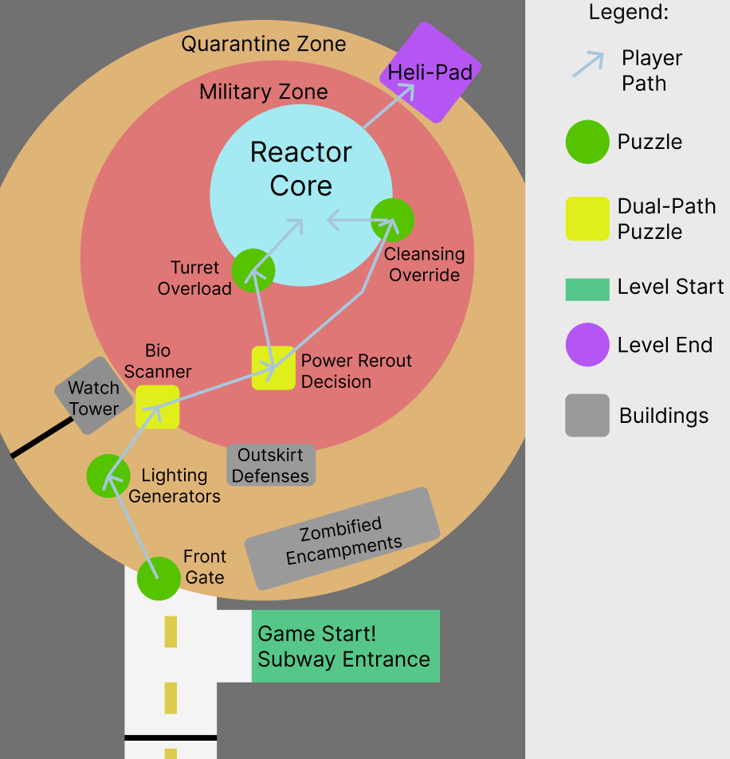
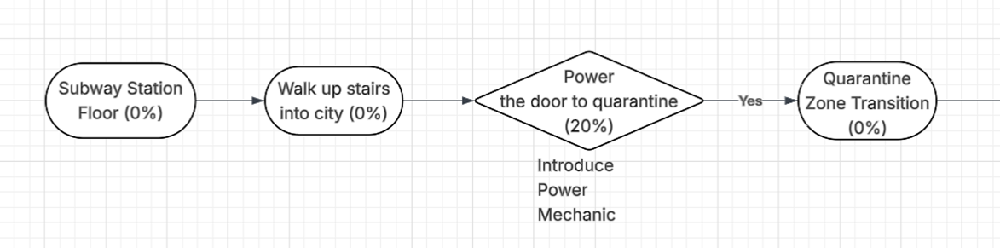
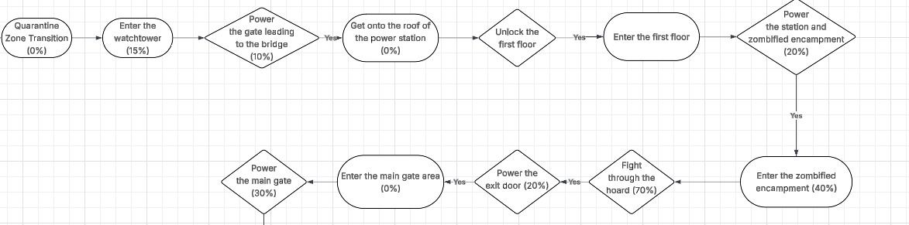
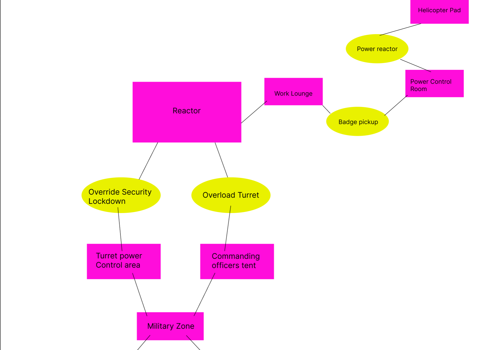
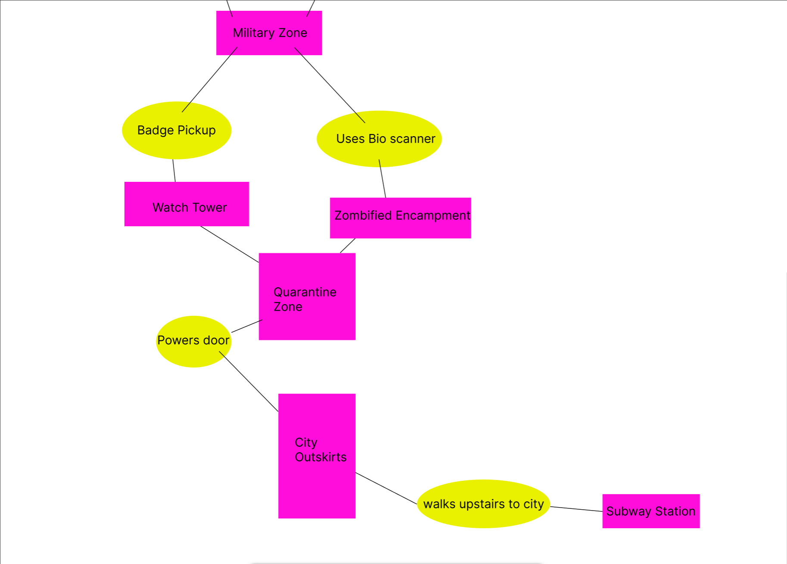
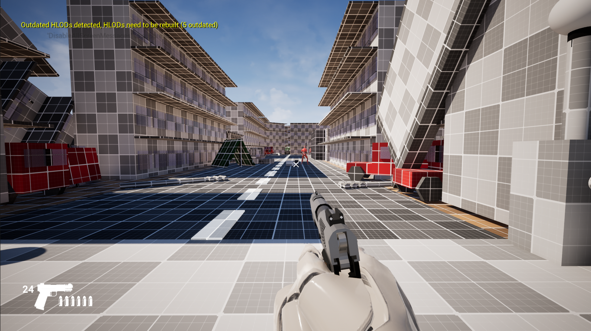
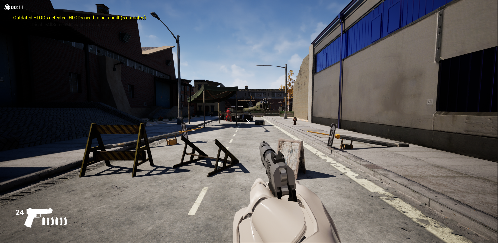
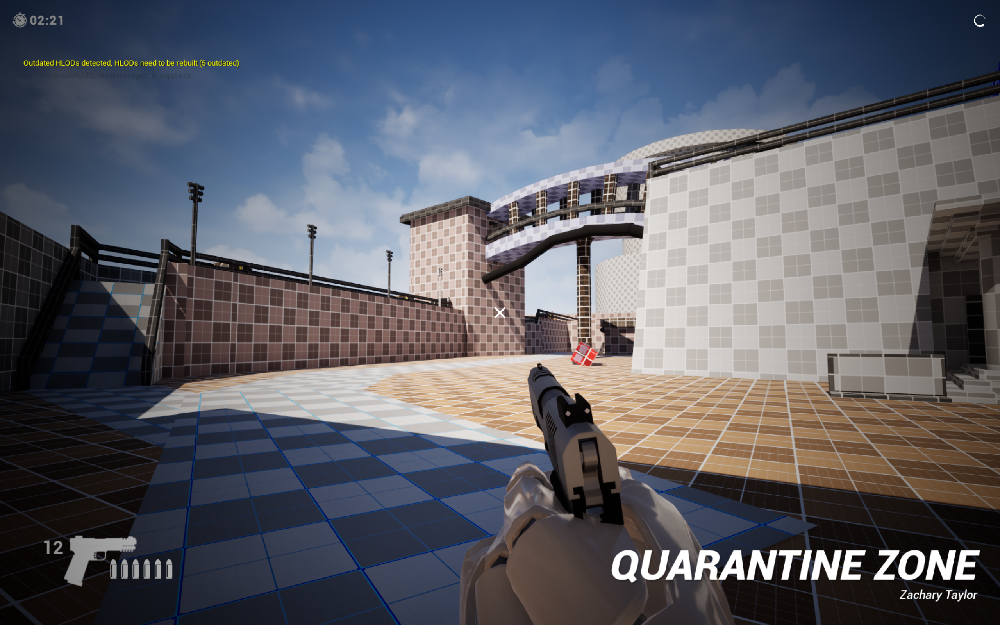
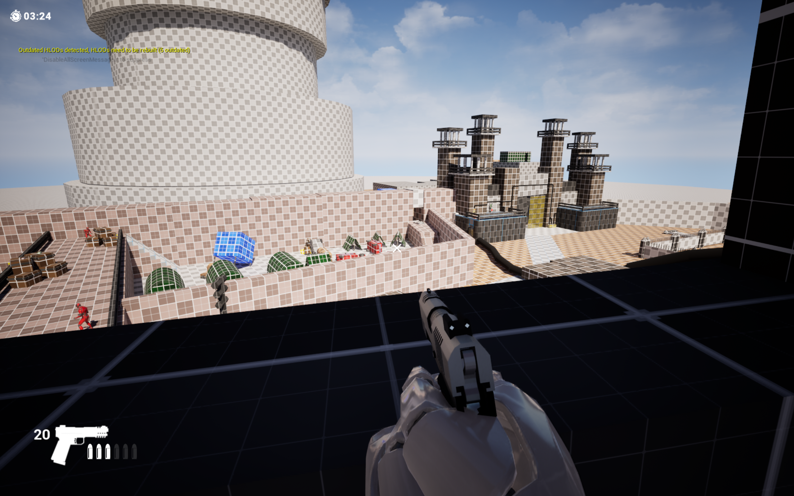
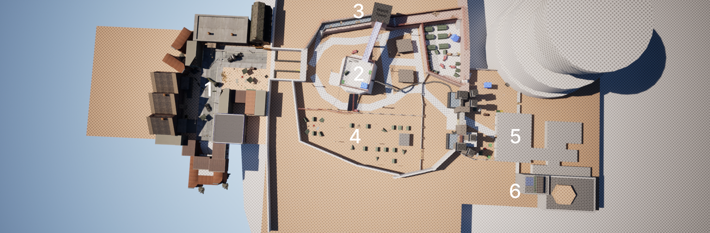

Scraps
The city is overrun with the infested, scrapper. Get through the quarantine zone and power on the nuclear reactor to get life support and defenses back online. Good luck and Godspeed.
Scraps is a first-person shooter game that is set in a zombie apocalypse. Society has fallen, and it is up to the scrapper to reclaim the wastes. This level takes the scrapper
through the city and quarantine zone in order to re-power the defenses and life support. Once the city's nuclear power plant is back up and operational, the scrapper can move onto their
next assignment and the city will be ready for re-population.>
Gameplay
See It In Action
Design
Design Pillars
Puzzle Design
Puzzles are introduced in a safe, enclosed environment. Players are allowed to explore, experiment and learn from their mistakes. We opted for leading lines to guide the player, wires that connected different devices and lit up slowly when powered. This ensured that players left feeling clever as they work through more complex challenges.
Level Design
We used leading lines and zombie "breadcrumbs" to lead the player from objective to objective and ensure that players could not become lost when entering into another objective zone. Zombies helped guide the player to the correct puzzle while leading line wires were implemented to assist with the puzzle clarity.
Process
How It Was Built
Concept & Documentation
After looking through the creative vision, the first steps we took were to think about the mechanics that we wanted to design for our puzzles. Then, we designed our map to both support the creative vision and how our puzzles might interact with the world.
Overworld Map
General flow of how the level should progress.

NOTE: The military zone ended up getting scrapped due to time constraints, leading to a more heavily fortified quarantine zone with militaristic outposts.
Flowchart
Player progression and puzzle dependency flowchart.
Level Start Flow Chart

Quarantine Zone

Reactor Zone
Bubblemap
Player progression and level flow.


Blockout
Blocking out the level took up most of our development time, and we had to adopt varying strategies to ensure we could get the full level made in 4 days. We ended up having to scrap portions of our project due to time constraints, but overall finished with a consistent and believable level flow.
Alpha
Progress of Alpha Screenshot

Beta
Progress of Beta

Blueprinting Systems and Game Mechanics
This month I was tasked with creating a power-based mechanic to complement our level design within the scope and creative vision we were given. Throughout my time developing these mechanics, I gained a better understanding of blueprint communication and learned how to properly scale a mechanic to make it more modular. Listed below are mechanics I have developed in 3 days from conception to full implementation.
Powerbox
Screenshot of the event graph
Battery Panel
Screenshot of the event graph
Battery Charger
Screenshot of the event graph
Keycard Reader
Screenshot of the event graph
Playtesting and Iteration
Playtesting and iteration is the key foundation to any good game
Alpha Playtest Feedback
Initially, we thought the game was in an alright state. However, as we received feedback we realized that there was a fundamental flaw in the way we were designing our puzzles - PIF. We had wires set up to connect to the power sources, however, it wasn't enough to communicate where the player should be going in an eye-catching manner.






Beta Playtest Feedback
Beta playtest feedback mostly discussed visual errors and enemy aggression ranges. Some players thought the bounds at which the enemies could reach out and attack the player were too small and easily avoidable through backtracking. Our response to this was simple, make the zones big enough to the point that backtracking still keeps you within their range.
Top Down Map

Map Key
1. City Zone (Level Start)
2. Quarantine Zone
3. Watch Tower
4. Military Encampment
5. Reactor Zone (Focal Point)
6. Helicopter Escape (End Zone)
Challenges
Problems & Solutions
Problem
Puzzle Design
Communicating to the player what different mechanics power what and go where without directly telling the player led to some challenge and frustration.
Solution
Split up areas into smaller sections
Splitting up the level into smaller areas allows players to have a more distinct realization of the bounds of the puzzle. They won't be expected to go out of their way for puzzle elements and reduces frustration.
Problem
Starting Level Design
Levels are difficult to create, starting them on a blank canvas can be intimidating and difficult to fully imagine.
Solution
Design the floorplans with basic furniture and identifiable features.
We found out that creating the floor plan allowed us to have a more distinct realization about how specific areas will flow. It also allowed us to have a sense of scale when navigating around without committing too many resources for iteration.
Outcomes
What I Learned
Level Layout
The level layout shifted and molded over time, scrapping ambitious ideas due to time constraints and having to iterate the transitions between different segments. I learned how to re-design areas to create realistic transitions when different parts of the level are scrapped.
Blueprint Communication
When I began the project, I did not have a good level idea about how I should structure the mechanics and create the blueprints to my desired systems. This led to unnecessary parent blueprints and refactoring code to pivot to a more efficient communication method. My main takeaway from this experience was to document and plan out systems before implementing them into the project.
Team Dynamics
Teamwork is a push and pull system and unexpected situations arise that require adaptation and pivoting. The most challenging aspect I had to adapt to was the differing workflows and mindsets that melded together. Some liked to work consistently every day, while others preferred to work in burst sessions when the deadline was approaching. I had to learn to manage my mindset while adapting to these differing workflows.
Deadlines
It's very important to understand the amount of work there is to do and how much time there is to finish. I quickly realized that I would have to dedicate at least 4 hours of my time per day in order to keep a consistent pace that met with deadline requirements.